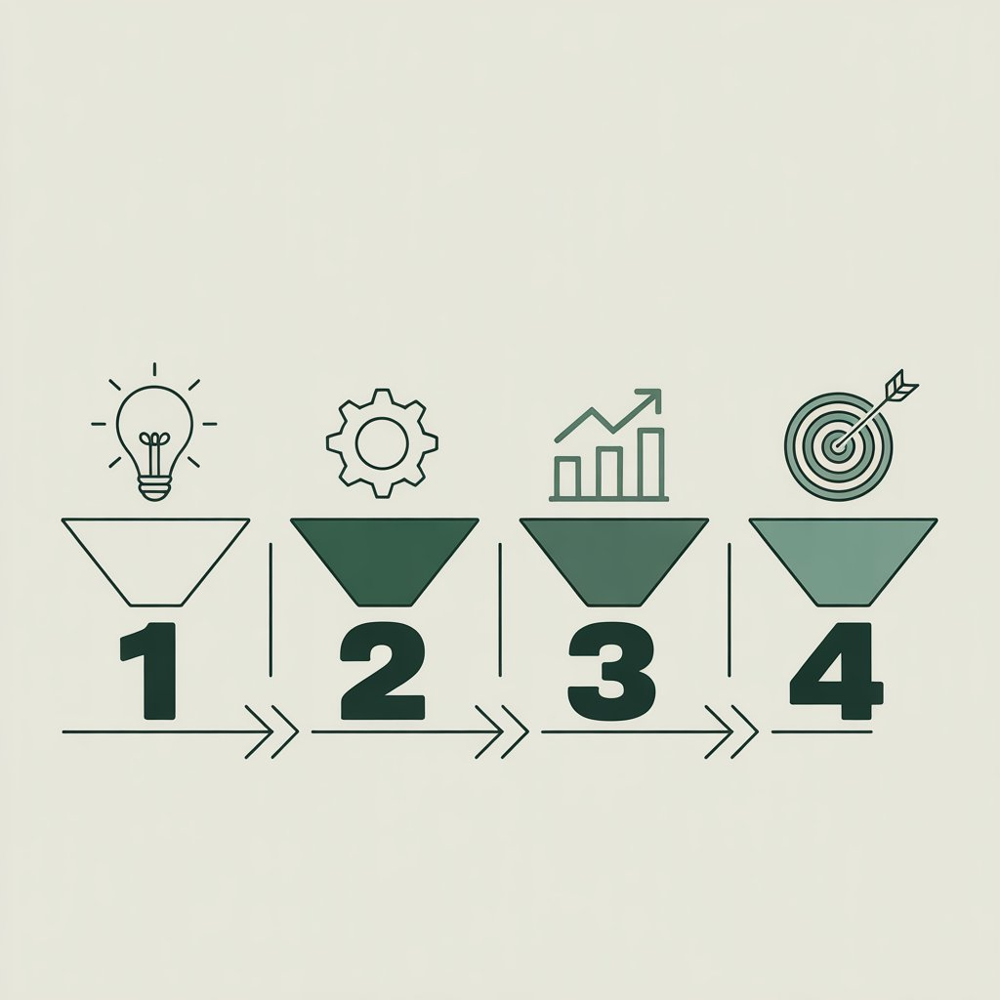
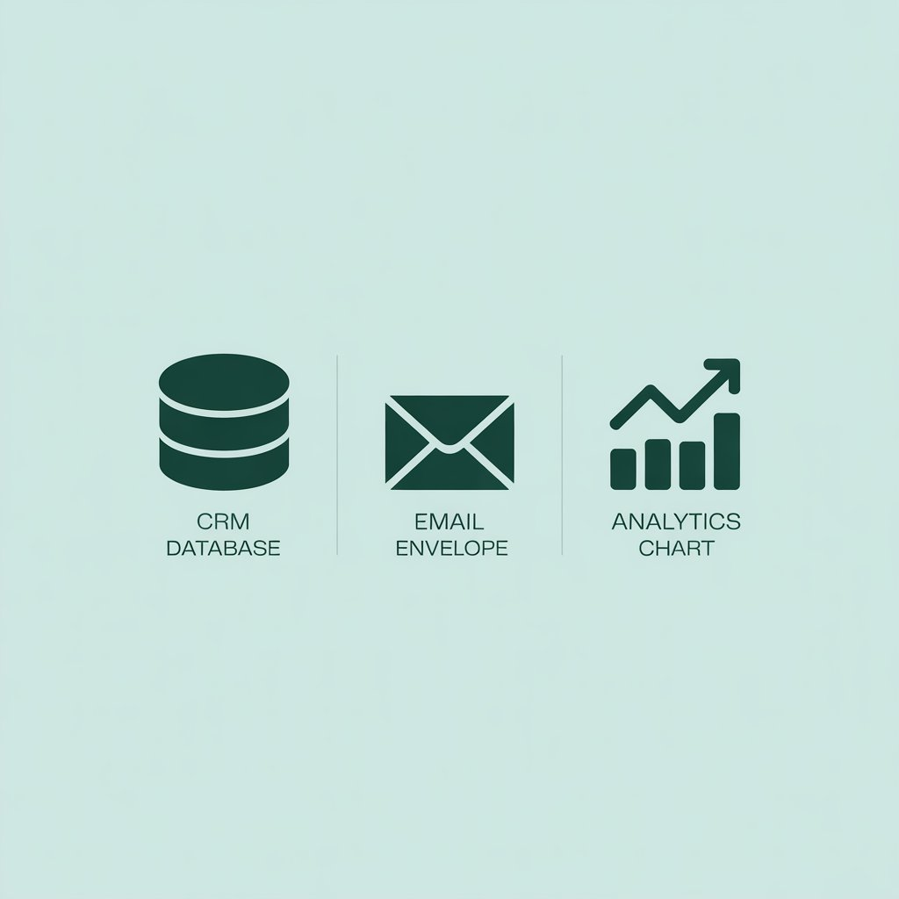
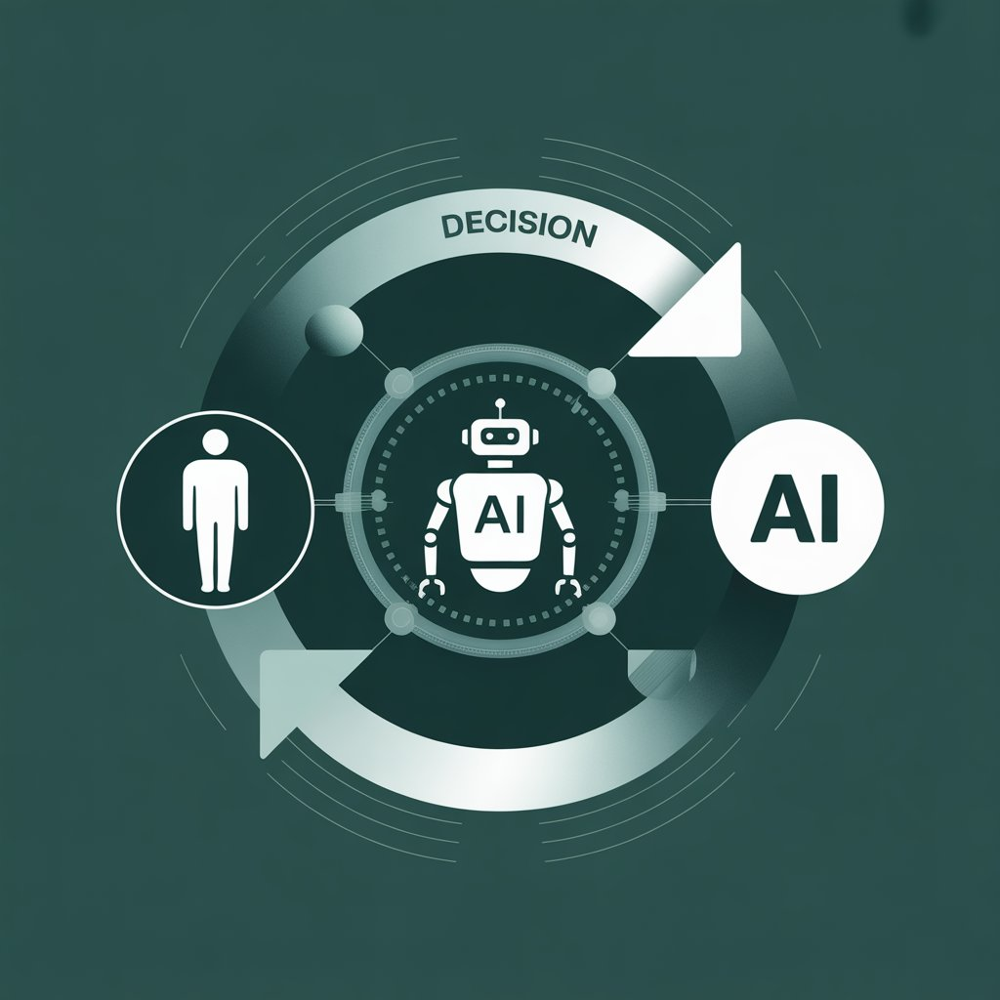

Эффективные инструменты маркетинга: как выбрать правильные для вашего бизнеса
Какие инструменты маркетинга выбрать для B2B-компании: методология, минимальный стек, сквозная аналитика и прогноз на 2025–2026.

Распространенные ошибки при выборе инструментов и их последствия
Когда речь заходит о том, какие инструменты маркетинга действительно нужны бизнесу, многие компании действуют по одному сценарию: маркетинговый отдел или подрядчик подключает одновременно несколько систем автоматизации со схожим функционалом. Совокупный ежемесячный чек за подписки достигает десятков тысяч рублей, при этом внятного обоснования для каждой платформы нет. Причина — отсутствие предварительного аудита процессов перед закупкой софта. Инструмент приобретается «на вырост» или потому что он активно обсуждается в профессиональной среде, без привязки к конкретной операционной задаче.
Опыт работы с сегментом B2B с выручкой до 2 млрд рублей показывает: корень проблемы не в качестве самих платформ, а в отсутствии измеримой гипотезы. Собственник или директор по маркетингу должен четко понимать, какой именно этап воронки требует усиления. Если такой ясности нет, любое внедрение из инструмента роста превращается в статью дополнительных расходов.
Второй принципиальный момент — игнорирование различий в моделях потребления B2B и B2C. Цикл сделки в корпоративном сегменте длится неделями и месяцами. Здесь инструменты маркетинга продаж должны работать на накопление экспертного капитала и прогрев аудитории. Импульсивное тестирование каналов, допустимое в рознице, в сложном B2B ведет к нерелевантным лидам и перегрузке отдела продаж.
Как определить ключевые инструменты маркетинга для вашего бизнеса
Использование инструментов маркетинга тогда дает отдачу, когда выбор платформы — финальная точка логической цепочки. Придерживаюсь алгоритма из четырех шагов.
- Определение точки роста. Необходимо детально разобрать текущую воронку. Где происходит максимальный отток: на этапе привлечения трафика, обработки заявки или удержания клиента? Конкретная цифра воронки — единственный объективный источник требований к инструментарию.
- Анализ цикла сделки. Для B2B со средним циклом закрытия 3–6 месяцев критически важны системы автоматического прогрева (email-цепочки, контент-маркетинг) и CRM с контролем длинных лидов. В B2C приоритет смещен в сторону скорости реакции и персонализации (чат-боты, AI-оптимизация рекламы).
- Приоритезация по ресурсам. Покупать enterprise-решение при одном штатном маркетологе нецелесообразно. Масштаб системы должен соответствовать текущей пропускной способности команды.
- Валидация на малом объеме данных. Прежде чем интегрировать дорогостоящий сервис, проверьте его эффективность на урезанном функционале или на отдельном сегменте базы.

Статистический срез по отраслям
По данным Content Marketing Institute и других профильных исследований за 2024–2025 год, распределение эффективности каналов выглядит так:
- SEO-продвижение: 16% вклада в общую результативность.
- Платные социальные каналы: 14%.
- Email-маркетинг: 14%.
- Контент-маркетинг: 14%.
При этом инструменты продвижения в маркетинге сложных промышленных ниш и индивидуального производства имеют свою специфику. Усредненные показатели служат лишь референсом. На практике вес органического поиска или отраслевых маркетплейсов может быть кратно выше социальных медиа.
Минимально жизнеспособный стек для старта.
Вне зависимости от отрасли, на начальном этапе фиксирую необходимость трех компонентов:
- Система учета лидов: CRM или структурированная Google/Яндекс Таблица. Стоимость внедрения на первом этапе — 0 руб.
- Платформа email-рассылок: Unisender, Notisend или аналог. Тариф до 1 000 руб.
- Счетчик веб-аналитики: Яндекс.Метрика.

Совокупные расходы не превышают 3 000 рублей в месяц. Этого контура достаточно для фиксации воронки и проверки маркетинговых гипотез. Масштабирование инструментов запускается только при двукратном росте нагрузки на ручные операции.
Инструменты управления маркетингом: когда и как их внедрять
Переход к полноценной автоматизации управления должен быть оправдан операционными перегрузками. Практика показывает: если менеджер ежедневно тратит более 20 минут на подготовку ручного отчета по рекламным кампаниям — это сигнал к внедрению дашбордов и сквозной аналитики.
Пример 1: AI-оптимизация рекламы.
Отраслевое исследование эффективности ИИ-инструментов за второй квартал 2025 года демонстрирует измеримый эффект от применения алгоритмов машинного обучения в категории «Сервисы и услуги». Снижение стоимости клика (CPC) составило 34%, стоимость первичных конверсий сократилась на 36%. В сегменте «Отели» падение стоимости конверсии достигло 4,3 раза.
Важно: эти цифры актуальны для ситуаций, где накоплен большой массив данных для обучения модели. При запуске нового продукта с нуля ручное управление остается точнее.
Пример 2: Единая CRM-экосистема.
Крупный международный 3PL-оператор провел интеграцию CRM с полным охватом маркетингового, сбытового и сервисного контура. Результаты:
- Рост конверсии с 16% до 20%.
- Сокращение времени закрытия сделки на 60%.
- Уменьшение ручного документооборота на 22%.
Ключевой вывод здесь — не в конкретном вендоре, а в принципе «единого окна». Когда данные о звонках, заявках с сайта и переписке разрознены, менеджмент теряет управляемость. Это напрямую влияет на инструменты отдела маркетинга: они перестают давать достоверную картину.
Роль сквозной аналитики в оценке эффективности
Среди собственников бизнеса с оборотом от 200 млн рублей до сих пор встречается мнение, что глубокая аналитика — удел IT-департамента. Это заблуждение обходится дороже всего. Наличие рекламного бюджета без сквозной цепочки от клика до отгрузки товара превращает маркетинг в работу с «черным ящиком».
До внедрения сквозной аналитики система веб-метрики в типичном интернет-магазине отражает менее 52% фактических заказов. Искажение возникает из-за некорректной передачи данных из ERP или CRM обратно в системы статистики. Управленческие решения о перераспределении бюджета принимаются на основе неполной выборки.
После настройки синхронизации удается связать 93% транзакций с источниками переходов. Это позволяет:
- Выявить каналы с отрицательным ROMI.
- Перераспределить бюджеты в пользу рентабельных сегментов.
- Снизить зависимость от субъективных оценок.
B2B-кейс: производитель оборудования.
Инжиниринговая компания, работавшая одновременно через офлайн-выставки и интернет-каналы, столкнулась с отсутствием единой картины по всем источникам лидов. Внедрение платформы сквозной аналитики и коллтрекинга заняло 14 рабочих дней. Результаты:
- Доля нецелевых обращений снизилась в 1,7 раза.
- Продажи выросли на 157% за счет перераспределения нагрузки с неэффективных каналов.
- Показатель отказов на входящих звонках сократился на 22%.
При оценке окупаемости в B2B критичен горизонт расчета. ROMI первого месяца после запуска технологии почти всегда отрицательный — сказывается длинный цикл сделки. Корректная оценка эффективности аналитических систем в этом сегменте возможна на дистанции 9–12 месяцев.
Инструменты современного маркетинга: прогноз на 2025–2026
Развитие технологий в ближайшие два года изменит ландшафт маркетинга сильнее, чем предыдущие пять лет. Четыре направления, которые станут основой для инструмента развития маркетинга в средне- и долгосрочной перспективе.

1. Рынок A2A (Agent-to-Agent). Взаимодействие смещается с человеческого на машинный уровень. AI-ассистенты становятся новым контуром целевой аудитории. По данным Gartner, к концу 2026 года доля запросов через AI-интерфейсы в России превысит 60%. Маркетинговые материалы должны проектироваться так, чтобы быть релевантными и для человека, и для алгоритма, который принимает решение за человека.
2. Инфраструктурная роль ИИ. Генеративные модели перестают быть надстройкой и становятся ядром платформ автоматизации. Компании столкнутся с дилеммой: скорость производства сотен креативов против контроля качества и риска некорректной информации в B2B-документации.
3. Смещение фокуса на LTV. Стоимость привлечения нового клиента в ряде B2B-ниш приближается к маржинальности первой сделки. Бюджет будет перетекать в инструменты управления клиентским опытом и программы лояльности. Аналитика удержания становится приоритетнее аналитики трафика.
4. Капитализация доверия. В условиях информационной перегрузки и роста дипфейков прозрачность данных и фактчекинг превращаются в экономический актив. Инструменты верификации контента и управления репутацией будут востребованы так же, как сегодня SEO-платформы.
Краткое резюме для внедрения
- Аудит процессов предшествует выбору платформы. Основные инструменты маркетинга решают конкретные задачи, а не «улучшают маркетинг в целом».
- Базовый стек для фиксации воронки и проверки гипотез — CRM, email, аналитика — требует не более 3 000 руб. в месяц. При росте нагрузки подключаются платные модули и новые сервисы.
- Интеграция сквозной аналитики обязательна при медийных бюджетах свыше 300 000 руб. в месяц. Без нее компания инвестирует в рекламу, не понимая реальной стоимости сделки.
- Автоматизацию на базе AI следует внедрять только при наличии достаточной исторической выборки данных.
- Инструменты маркетинга компании должны отбираться под бизнес-модель, а не под абстрактный рейтинг платформ.
Такой подход позволяет исключить неэффективные расходы и выстроить маркетинговую систему, готовую к масштабированию.